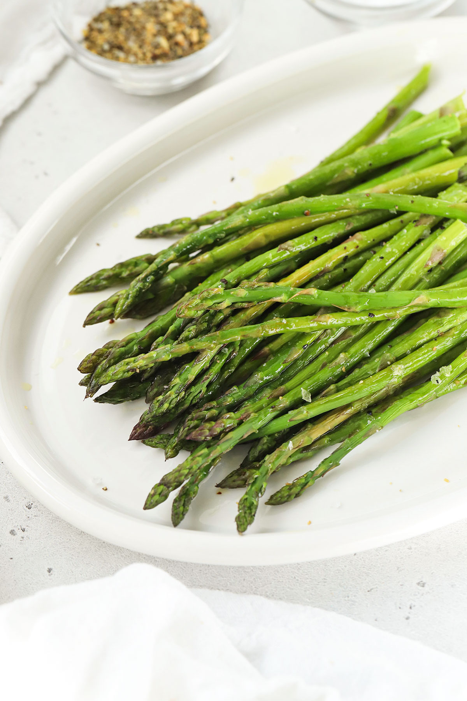

Ashna Balroop was in high school when she discovered the job she wanted to do for the rest of her life. The Long Island native was tasked with interviewing a local politician from her hometown for a journalism project, and from there she knew reporting was her calling.
Now a sophomore journalism and government and politics student at the University of Maryland, Balroop has worked her way up to managing editor of Stories Beneath the Shell, feeding her passion for journalism.
In fact, she chose to go to UMD for college partly because of its journalism program. Now, she’s thankful for her decision for a variety of reasons, including the fact that the sun always seems to be shining in Maryland.
Moving to more niche preferences, Balroop said if she could have any superpower, she would choose invisibility.
“It would be fun to eavesdrop on everyone’s conversations,” she said.
Over the summer, she visited Arizona with her mother and explored Grand Canyon National Park.
She said one of her life goals is to go to every national park in the United States. Aside from the Grand Canyon, she has also so far checked off Acadia National Park in Maine, and next she hopes to visit Virginia’s Shenandoah.
At first, Balroop said her least favorite vegetable was zucchini. But after having second thoughts, she changed her answer to asparagus.
Learn More Here!